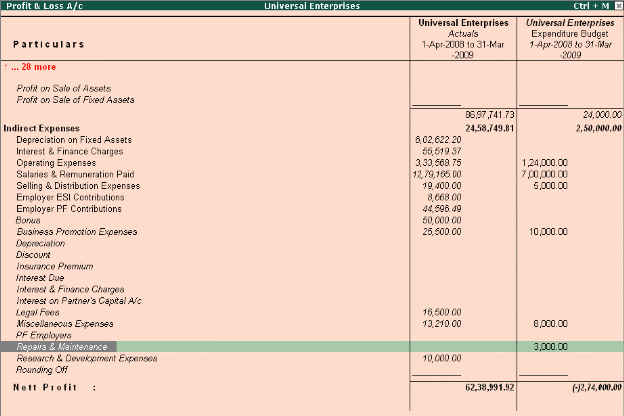

Budgeting and Control
To configure for budgets,
To create budgets, Businesses need to control their expenses based on income levels and monitor variances. Budgets in Tally.ERP 9 helps you compare the actual financial performance versus budgeted figures and obtain variance reports. You can define multiple budgets (e.g. Optimistic Budget, Realistic Budget) or even create budgets for different periods. The budget values can be defined for each Group as well as for all Ledgers.
Go to Gateway of Tally > F11: Features > F1: Accounting Features
# Set parameter Maintain Budgets and Controls to Yes
Go to Gateway of Tally > Accounts Info. > Budgets > Create
# Specify a name for the budget
# Specify a date range for the budget
# Set Yes to Groups / Ledgers and assign budget to selected groups/ledgers
To view budget reports,
# Select any report (Balance Sheet, Profit and Loss A/c, Trial Balance)
# Select Alt + C (New Column)
# Specify details for period, Currency and Method of Stock Valuation. (Default or as per requirement)
# Select the created budget name for Types of Value to show
# Set Show Variance to No
